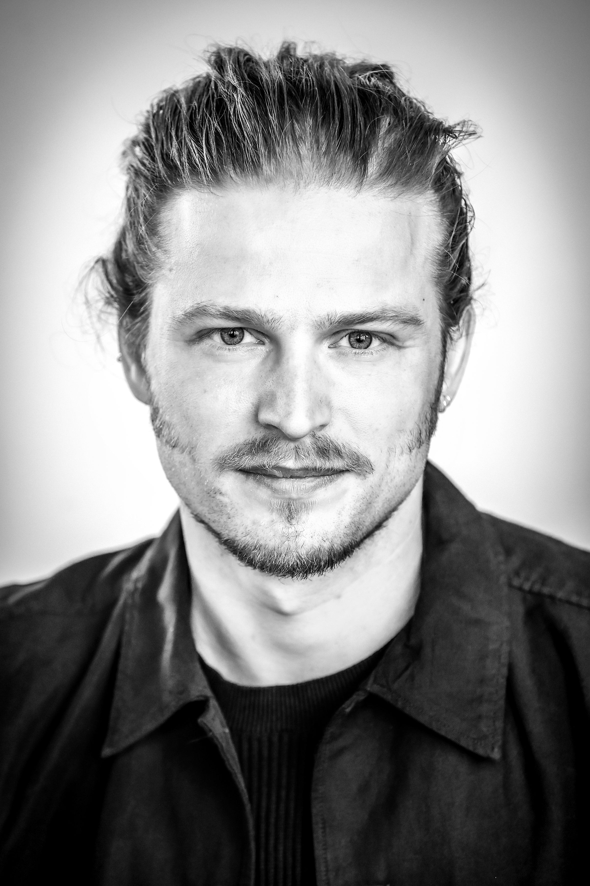
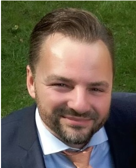
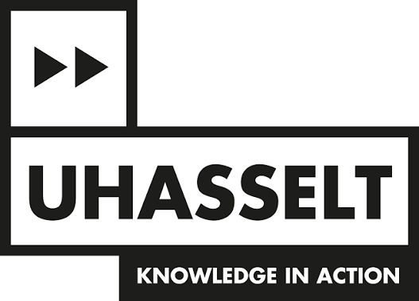
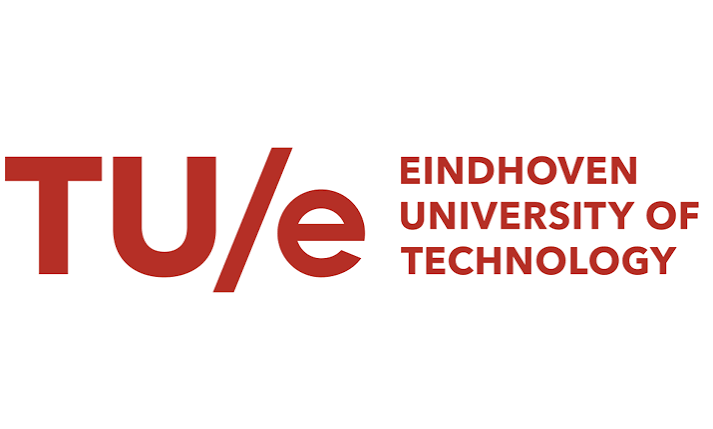
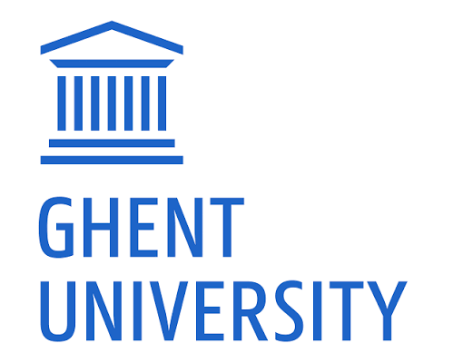
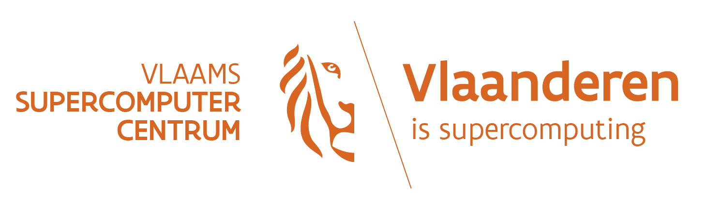

Jolan Wauters
Assistant Professor, KU Leuven
Bayesian Optimization: Enabling the First-Time-Right Paradigm for Dynamical Systems
Bringing together researchers, engineers, and practitioners working on Bayesian Optimization in the Benelux region.
Bayesian Optimization (BO) is a powerful framework for the global optimization of expensive-to-evaluate black-box functions. It has become an indispensable tool across a wide range of domains, from hyperparameter tuning of machine learning models to industrial process optimization and drug discovery.
This workshop brings together researchers, engineers, and industry practitioners in a structured yet collaborative environment. It equips newcomers with a solid conceptual grounding, exposes experienced users to diverse application domains, and provides a platform for researchers to share recent methodological developments. The workshop also aims to catalyse the formation of a Benelux-centred network of people actively working with and advancing Bayesian Optimization.
The two invited talks offer accessible entry points into the field for newcomers, while the contributed talks present recent methodological developments and applications for experienced users.

Assistant Professor, KU Leuven
Bayesian Optimization: Enabling the First-Time-Right Paradigm for Dynamical Systems

Postdoctoral Researcher, University of Antwerp
Deep Gaussian Processes: Learning Complex Mappings with Uncertainty
Times are elapsed from the start of the workshop.
| 00:00–00:10 | Opening and welcome |
| 00:10–00:50 | Invited talk: Bayesian Optimization: Enabling the First-Time-Right Paradigm for Dynamical Systems Jolan Wauters · KU Leuven |
| 00:50–01:30 | Invited talk: Deep Gaussian Processes: Learning Complex Mappings with Uncertainty Ivan De Boi · University of Antwerp |
| 01:30–01:45 | Break |
| 01:45–02:10 | Black-box optimization with large language models: what works so far? András Retzler · Ghent University |
| 02:10–02:35 | Benchmarking Surrogate-Based Optimisation, Evolutionary, and Hybrid Algorithms on Real-Life Expensive Multi-Objective Black-Box Problems Jialiang Guo · Eindhoven University of Technology |
| 02:35–03:00 | High-Dimensional, Mixed-Variable Bayesian Optimization using Block-Partitioned Tree-Structured Parzen Estimator (Block-TPE) Vipul Chalotra · Hasselt University |
We invite contributed talks (15 minutes) on Bayesian Optimization: methodological advances, applications, benchmarks, and work in progress. Submissions will be selected by the organizing committee based on novelty and relevance. Two submission types are accepted:
Full papers : original, unpublished work; long (up to 15 pages) or short (up to 10 pages), excluding references and appendices.
Extended abstracts : up to 2 pages (excluding references), suitable for previously published work, ongoing work, or early-stage results.
Reviews are single-blind: submissions should include authors' names and affiliations, be written in English, and use the Springer CCIS/LNCS format, in line with the BNAIC/BeNeLearn 2026 guidelines. Submission implies that at least one author registers for the conference and presents in person.
Proceedings : All accepted contributions will be included in the dedicated workshop proceedings following peer review. Accepted contributions will also be considered for inclusion in the conference pre-proceedings, subject to a positive evaluation by the conference organizing team. The conference pre-proceedings will be published open access as CEUR Workshop Proceedings.
We are also exploring the possibility of inviting a selection of full papers to submit extended versions to a journal post-proceedings or special issue. Further details on the publication arrangements will be announced once confirmed.
If you do not yet have an account, we recommend creating one with your institutional email address well before the deadline.
Questions? Contact sasan.amini@uhasselt.be.



